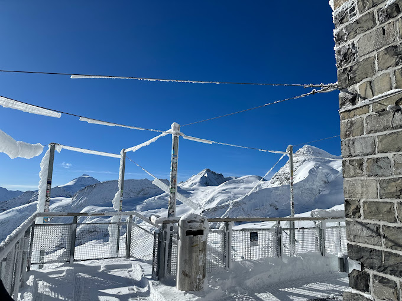

TOURIST SPOT
JANGFRAJOCH- TOP OF EUROPE
• The Sphinx Observatory is an astronomical observatory located above the Jungfraujoch in Switzerland.
• It is named after the Sphinx, a rocky summit on which it is located.
• At 3,571 m above mean sea level, it is one of the highest observatories in the world
